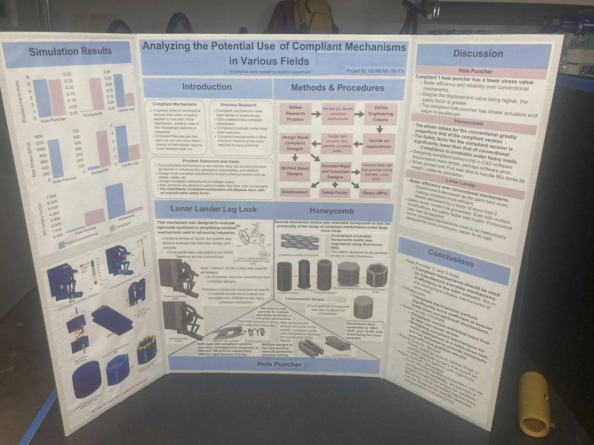

04 / 04 · Alameda County (ACSEF) and California State (CSEF) Science Fairs · Complete
Applications of Compliant Mechanisms Study
- Compliant Mechanisms
- Fusion 360
- Finite Element Analysis
- Design of Experiments
- Hypothesis Testing
- 3D Printing
Overview
Studied the effectiveness of compliant mechanisms in three applications: aerospace, crash safety, and common household items. I shared the design iteration, the finite element analysis, and the statistical validation with two other student researchers. Every article was designed twice, once compliant and once as a rigid baseline, and run under identical loads. Displacement, von Mises stress, and minimum factor of safety were fixed as the criteria before any design existed.
Technical Approach
Design of experiments, simulation, and physical validation
We modeled and simulated in Autodesk Fusion against a rigid control, printed in TPU and PLA, load-tested, then checked the measured output with t-procedures. The three mechanisms bracket the useful range of compliance: a reconstruction of the down-lock mechanism of the Apollo Lunar Lander, an everyday hole puncher, and a negative-stiffness honeycomb at 10 kN. For the hole punchers I convinced the research team to add hole diameter and cycle time as comparison metrics, because they are the two things a buyer would notice: holes that fit a standard binder, and how long one punch takes when there is a stack of paper waiting.

Outcomes
- Derived a 25,000 N design load for the down-lock from the Apollo gear's own test data and simulated both versions in Titanium Grade 2, where the compliant design halved peak von Mises stress (2.04 MPa against 4.783 MPa) and cut displacement to 0.108 mm from 0.277 mm.
- My FEA put the compliant puncher at 3.8 MPa peak stress against 667.0 MPa for the rigid one under a matched 20 N load, and the same runs priced what that costs: 10.001 mm of travel against 2.839 mm.
- Ran the honeycomb against criteria I had fixed before modeling it and reported it as a failure: 43x the displacement, 12x the stress, a tenth the factor of safety at 10 kN.
Challenges
- The rigid single-hole puncher has a lever advantage, so loading both versions identically would have flattered one of them. Working out what a fair comparison meant, and running that pair at unequal loads while the two-hole pair ran matched, is the decision the whole study rests on.
- The down-lock solver returned invalid factor-of-safety output on both versions and kept returning it through every geometry version I tried. Establishing that the fault sat in the study rather than in my part took most of the analysis time, and I reported it unresolved.
- The printed honeycomb held more than 90 times its own weight, which my simulation said it should not. We also tested that using a weight made out of textbooks, instead of securing the test subject to a rig placed under a hydraulic press.
- Reproducing the Apollo Lunar Lander down-lock mechanism in CAD required sifting through old NASA archives with very limited blueprints and reference images showing the mechanism in detail.